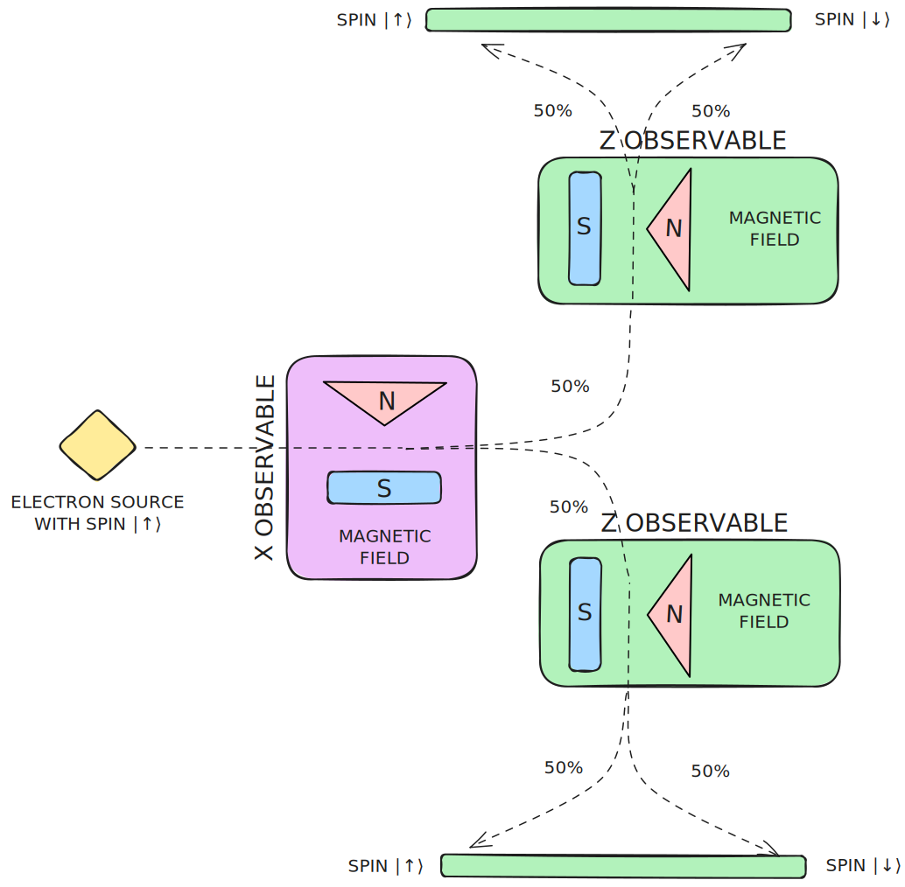
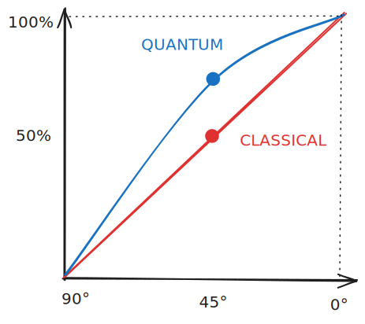
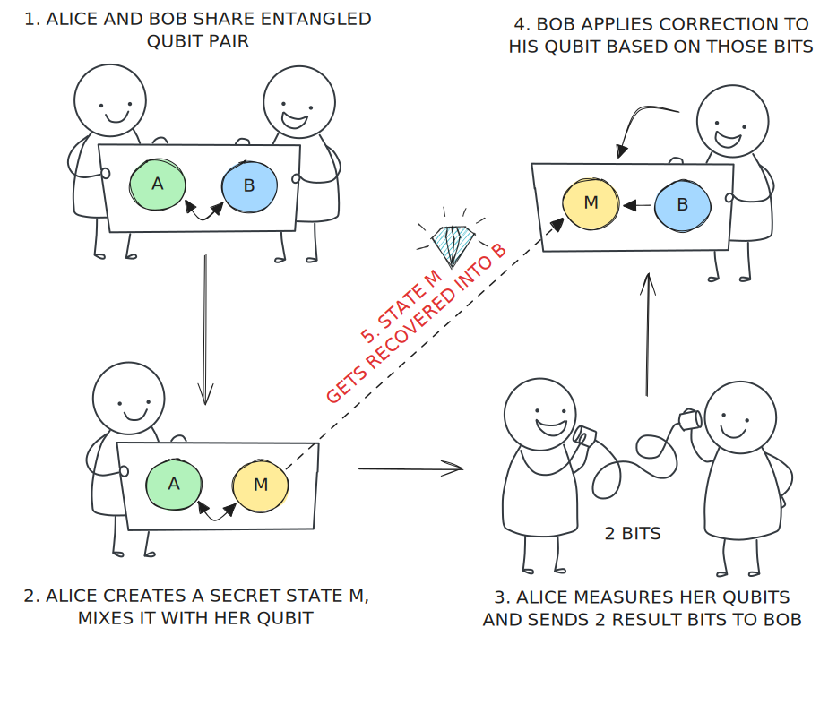

Quantum Mechanics

Superposition

operation BeamSplitter() : Result {
// allocate a new qubit in default state
use photon = Qubit();
// beam splitter
H(photon);
// result is a random Zero or One ("detector1" or "detector2")
MResetZ(photon)
}
operation MachZehnder() : Result {
// allocate a new qubit in default state
use photon = Qubit();
// beam splitter
H(photon);
// second beam splitter
H(photon);
// result is a certain Zero ("detector2") due to interference
MResetZ(photon)
}
operation MachZehnderWithQND() : (Result, Result) {
// allocate a new qubit in default state
use photon = Qubit();
// beam splitter
H(photon);
// observe using the QND - it is a random Zero or One ("qnd1" or "qnd2")
let qndResult = MResetZ(photon);
// second beam splitter
H(photon);
// result is now a random Zero or One (interference disappears)
let detectorResult = MResetZ(photon);
(qndResult, detectorResult)
}


Uncertainty principle
operation SpinZ(measurement_basis : Pauli) : Result {
// allocate a new qubit in the state |0⟩ - which is the same as |↑⟩
use electron = Qubit();
// measurement result is deterministic in the Z basis
// and random in the X basis
let result = Measure([measurement_basis], [electron]);
Reset(electron);
result
}

operation SpinZMeasuredInXThenZ() : Result {
// allocate a new qubit in the state |0⟩ - which is the same as |↑⟩
use electron = Qubit();
let result_one = Measure([PauliX], [electron]);
let result_two = Measure([PauliZ], [electron]);
Reset(electron);
result_two
}

Entanglement
operation Entangled(measurement_basis : Pauli) : Result[] {
use (qubit1, qubit2) = (Qubit(), Qubit());
// create entangled state
H(qubit1);
CNOT(qubit1, qubit2);
// measure in any basis, as long as it is the same for both qubits
let result1 = Measure([measurement_basis], [qubit1]);
let result2 = Measure([measurement_basis], [qubit2]);
ResetAll([qubit1, qubit2]);
// the measurement results will be perfectly correlated
[result1, result2]
}
Bell's theorem
- 📐 If electrons carried fixed outcomes, correlation $C$ would fall linearly, so at 45° we get 50% correlation
- ⚛️ Quantum mechanics predicts instead that $C=cos(\theta)$ - so at 45° we get ~70% correlation

We call this
non-locality
